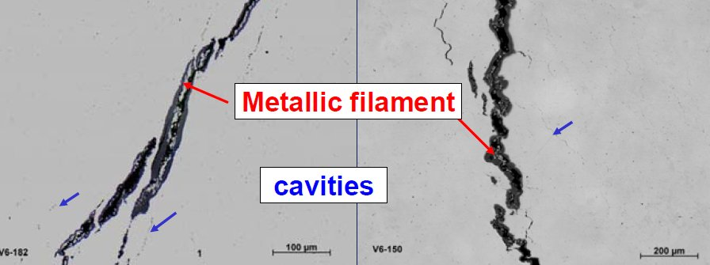
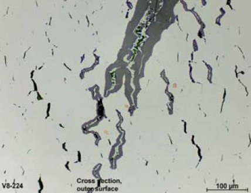
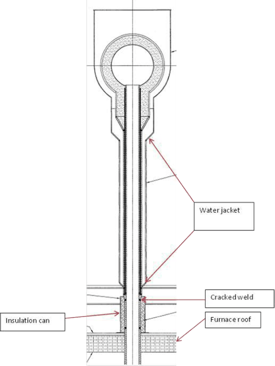
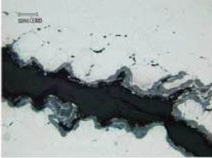
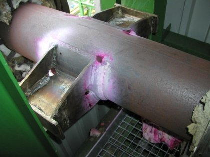
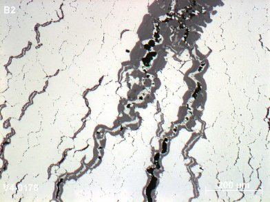

Stress Relaxation Cracking in Austenitic Alloys: Mechanism, Mitigation and ASME Code Considerations
Stress relaxation cracking can rupture a code-compliant component within a year or two of start-up. How it works, where the codes leave gaps, and what prevents it.
Stress relaxation cracking (SRC) is a critical failure mode of austenitic materials in high-temperature service. It can occur where tensile residual stresses are high, especially in weld heat-affected zones (HAZ) and cold-formed areas. It is most common in austenitic stainless steels and nickel-based alloys used for critical components such as superheaters and reheaters in the petrochemical and power industries. Unlike hot cracking or creep rupture, SRC develops while residual or applied stresses relax at elevated temperature.
This article explains the mechanism of SRC, compares the susceptibility of Alloy 800H with stainless steel grades such as 347H, and examines mitigation under the ASME Boiler and Pressure Vessel Code (BPVC), the main design code for pressure vessels and boilers in the oil and gas industry and in nuclear applications.
SRC is also known by other names [3]:
| During fabrication | During service |
|---|---|
| Reheat cracking | Creep embrittlement cracking |
| Stress relief cracking | Stress-induced cracking |
| Stress-assisted grain boundary oxidation cracking |
Why SRC needs special attention
SRC in equipment and weld joints needs special attention for three reasons. First, it is hard to detect in its early stages, yet once it starts it often progresses rapidly to brittle failure, typically rupture, early in the equipment's life. Second, it occurs mainly in thick-walled components operating at elevated temperature, which are usually critical, high-risk applications. Third, current design codes such as the ASME BPVC do not fully account for all the factors needed to prevent SRC. A recent U.S. Nuclear Regulatory Commission (NRC) report [1] identified this as a significant gap in the ASME BPVC.
In one published failure, the outlet header of a superheated steam coil, made of 48 mm thick 316H, ruptured from SRC at its longitudinal seam weld. The rupture caused extensive damage in the convection section of a steam reformer at a methanol plant, and large fragments were thrown up to 100 m across the site [2].
Morphology and critical factors
SRC is intergranular and can be surface-breaking or embedded, depending on the stress state and geometry. It is most often found in the coarse-grained region of a weld HAZ, but can also occur in weld metal. Cracks often start at a stress concentration, and once started they can grow further by fatigue.
Three factors contribute to SRC: residual stress, a susceptible microstructure, and elevated temperature in the creep-dominated regime [9]. Cracking happens without gross plastic deformation; most of the deformation is concentrated at the grain boundaries. Susceptible alloys contain elements that form fine intragranular precipitates, which make the grains stronger than the grain boundaries. Creep deformation from stress relaxation therefore concentrates at the boundaries and eventually causes intergranular cracking [1]. This is why stabilized grades such as 347 and 321 are more susceptible than 304 [3].
Smaller grain sizes resist SRC better. Grain growth can be controlled by using lower solution annealing temperatures, achieving ASTM 4 or finer grains. Traditional heat treatment of austenitic alloys results in coarse grains (ASTM 5 and coarser), which improve creep resistance but also increase SRC risk after cold forming [3].
The cracks always lie on grain boundaries, with small isolated cavities ahead of them. A metallic filament is usually present along the cracked boundary, enclosed in a chromium-rich oxide layer that is low in nickel and iron. The composition of the filament depends on the material, but it is always low in chromium and high in nickel (for Alloy 800) or iron (for stainless steels) (Figure 2).


What the codes and guidelines say
Although SRC is a well-known damage mechanism, the applicable codes still do not cover it fully, so equipment can comply with its design code and still be prone to SRC and premature brittle failure. The most common standards and guidelines are reviewed below.
ASME BPVC Section II, Part D [4]
Nonmandatory Appendix A, Issues Associated With Materials Used in ASME Code Construction, addresses SRC in paragraph A-206. It can occur in cold- or warm-worked austenitic materials when temper-resistant particles precipitate at defect sites introduced by mechanical working. When the material is exposed to intermediate temperatures (510 °C to 760 °C) during heat treatment or service, strain localizes at the grain boundaries and causes rapid intergranular creep cracking.
The appendix notes that this has caused through-wall failures in pressure parts made from susceptible heats of materials such as 347H and 310HCbN, even during heat-up for solution annealing. To reduce the risk, ASME introduced rules in PG-19 (Section I) and UHA-44 (Section VIII, Division 1) aimed at SRC in design and fabrication. SRC is therefore recognized and partly addressed by the Code, although additional design-specific measures may still be needed.
ASME BPVC Section VIII, Division 1 [5]
Paragraph UHA-A-4 of Nonmandatory Appendix UHA-A recognizes that SRC can develop in P-No. 8 materials, not only in cold-formed areas but also in weld zones with high residual tensile stress. To minimize the risk, it advises PWHT in accordance with Table UHA-44 unless specific criteria are met, for example a design temperature below 540 °C (1000 °F), or welding limited to low-risk configurations such as circumferential welds or fillet welds 13 mm thick or less, or specific fin welding under tightly defined limits.
Table UHA-44 specifies solution annealing as the heat treatment for cold-formed parts that exceed the allowable fibre elongation. For 347H, for example, the minimum heat treatment temperature is 1095 °C.
In the mandatory part of the Code, the PWHT table for P-No. 8 materials states that PWHT is neither required nor prohibited, leaving the decision to the user, guided by the nonmandatory Appendix UHA-A. This leaves a grey area, possibly because PWHT can itself cause SRC under some conditions, and increases the risk of sensitization in austenitic materials.
ASME BPVC Section I [6]
Section I gives guidance similar to Section VIII, Division 1 for PWHT of P-No. 8 materials. According to Table PW-39-8, PWHT is neither required nor prohibited. Note (b) to the table, however, suggests PWHT may be advisable to reduce the risk of SRC, particularly for thick sections operating at elevated temperature, in line with ASME Section II, Part D, Nonmandatory Appendix A. As in Section VIII, the decision is left to the user, based on the service conditions and fabrication details.
API RP 571 [7]
API RP 571 covers SRC as a damage mechanism in paragraph 3.54. It lists susceptible materials, including austenitic stainless steels (304H, 316H, 321 and 347) and nickel-based alloys (Alloy 800H, 800HT and 617). SRC typically occurs between 500 °C and 750 °C and is influenced by grain size, composition, weld strength, residual stress, section thickness and fabrication conditions. Large grains and high residual stress, especially in thick sections, increase the risk. The RP also notes that stress relief or stabilization heat treatments can sometimes make SRC worse.
API TR 942-A [8]
This technical report covers material selection, fabrication and repair of outlet pigtails and manifolds in hydrogen and syngas reformer furnaces. It identifies SRC as a major failure mode of these components when exposed to fabrication or operating temperatures between 500 °C and 750 °C, and includes a case history of SRC in an Alloy 800HT pigtail.
API TR 942-B [3]
This report examines SRC in austenitic alloys in high-temperature refinery service: its causes, susceptibility and prevention.
- Susceptibility ranking: 800HT > 347 > 800H > 321 > 304 > 316. Susceptibility is higher in alloys with fine intragranular precipitates.
- Grain size and cold work: finer grains (ASTM 3.5 and finer) resist SRC; 2% or more cold deformation increases the risk, which can be mitigated by stabilization heat treatment at 980 °C.
- Welding: minimize restraint, avoid stress concentrations and use low heat input.
- Heat treatment: PWHT at 843 °C to 899 °C, or a multistep treatment (stress relief, then solution annealing, then stabilization at 593 °C).
- Materials: limit bismuth to 0.002% or less in Type 308 FCAW weld metal for service above 538 °C.
API TR 942-B recommends PWHT for some austenitic stainless steel grades, at temperatures quite different from those suggested by the ASME BPVC. For 347, for example, it recommends 900 °C for 1 hour per 25 mm of thickness (3 hours minimum), followed by cooling in still air.
Case histories
The following two case histories involve two of the materials most vulnerable to SRC: Alloy 800H and 347H.
Case history 1: cracking of an Alloy 800H reformer riser [11]
A steam reformer riser, a cast HP microalloy tube welded to an Alloy 800H transition piece, failed. The first incident, in 2010, was caused by thermal shock from a water leak, but further inspection found multiple cracks in the HAZ of the 800H welds that were not related to the water damage, which prompted a detailed investigation.
The cracking showed the classic signs of SRC:
- Intergranular cracks in the HAZ.
- Voids and grain boundary oxidation.
- Nickel-rich metallic filaments with chromium-depleted zones.
- Cracking in areas with hardness near 200 HV.
- Occurrence within 1 to 2 years of service at about 600 °C.
The design had been modified in 2006, moving the weld closer to a cooler area near a water jacket. That location probably created ideal conditions for SRC: high residual stress, coarse grains and an operating temperature within the critical 500 °C to 750 °C range.
The solution was PWHT at 885 °C, which relieved the stress and reduced the hardness. No further cracking was found after this treatment, confirming SRC as the root cause. This is the heat treatment that paragraph UNF-56 of ASME BPVC Section VIII, Division 1 requires, as explained above, and shows how such requirements can be missed.


The case shows how SRC can silently damage high-temperature components, and how important heat treatment is in preventing it, even in alloys such as 800H that were once thought immune.
Case history 2: cracking of 347H inlet piping of a steam reformer [12]
The 347H inlet piping of a steam reformer cracked at welded support pads in less than 16 months. Failures were found at welded reinforcing pads and branch connections of the inlet pipes. No PWHT had been applied.
The SRC features observed included:
- Intergranular cracks originating at grain boundaries.
- Nickel-rich metallic filaments surrounded by chromium-rich oxide.
- Cavities and signs of localized embrittlement.
- Hardness above 200 HV at the crack locations, with no visible plastic deformation.
Corrective actions included:
- Replacing welded supports with clamp-type supports to reduce restraint.
- PWHT at 875 °C to 930 °C to relieve residual stress and reduce hardness.
- Improving insulation to prevent sensitization and external corrosion.


This case reinforces the need to consider SRC in 347H even when the codes do not require PWHT, especially for thick sections, critical welds and highly stressed configurations at high temperature.
Conclusion
Stress relaxation cracking is a critical but often overlooked failure mechanism of austenitic stainless steels and nickel-based alloys at high temperature. The ASME BPVC and API documents address it, but it remains a complex problem driven by residual stress, microstructure and operating conditions. The case histories of 347H and Alloy 800H show that SRC can occur even when materials are used within code limits, revealing a gap between compliance and real reliability.
To reduce the risk of SRC, engineers should minimize cold work and residual stress, apply appropriate PWHT, manage grain size, and identify high-risk configurations such as thick sections and welded supports. The ASME Code acknowledges SRC, but its guidance, especially on PWHT, is often nonmandatory or loosely defined, leaving engineers and designers responsible for informed decisions.
Preventing SRC ultimately takes deeper technical understanding, proactive design and wider industry awareness. These improve the long-term integrity of high-temperature pressure equipment and reduce the likelihood of premature failure.
References
- U.S. NRC, Assessment of Stress Relaxation Cracking of Austenitic Components in Regard to the ASME Section III, Division 5 Rules, TLR-RES/DE/REB-2024-19.
- P. Tait, Lessons Learned from the Rupture of a Steam Superheater Header, Inspectioneering Journal, January/February 2021.
- API TR 942-B, Material, Fabrication, and Repair Considerations for Austenitic Alloys Subject to Embrittlement and Cracking in High Temperature 565 °C to 760 °C (1050 °F to 1400 °F) Refinery Services, 1st edition, 2017.
- ASME BPVC Section II, Part D, 2023 edition.
- ASME BPVC Section VIII, Division 1, 2023 edition.
- ASME BPVC Section I, 2023 edition.
- API RP 571, Damage Mechanisms Affecting Fixed Equipment in the Refining Industry, 3rd edition, 2020.
- API TR 942-A, Materials, Fabrication, and Repair Considerations for Hydrogen Reformer Furnace Outlet Pigtails and Manifolds, 1st edition, 2014.
- NREL, Stress Relaxation Cracking of Alloys at Temperatures Higher Than 540 °C, Technical Report NREL/TP-5700-80404, January 2024.
- H. van Wortel, Control of Relaxation Cracking in Austenitic High Temperature Components, TNO Science and Industry, VeMet Conference, 2009.
- C. Thomas, Cracking of Alloy 800H Reformer Riser, Quest Integrity, Nitrogen+Syngas Conference, 2014.
- J.Q. Taghiyev, Relaxation Cracking: Investigation of Several Failures in Petrochemical Plants, NACE Paper MECCOCT18-12676.
This article is for general engineering guidance. Apply it with the current edition of the referenced codes and standards and the judgement of a qualified engineer.